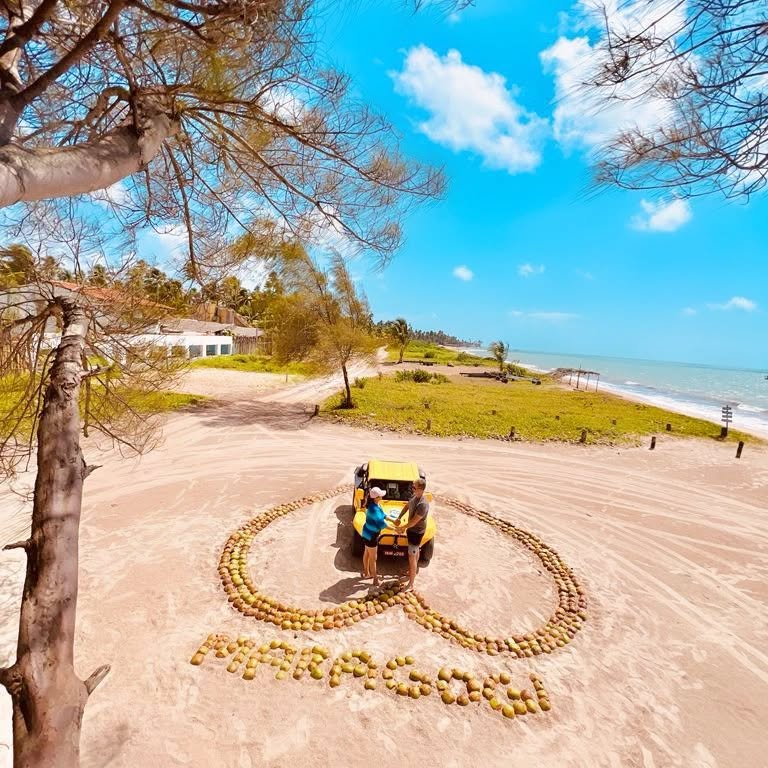
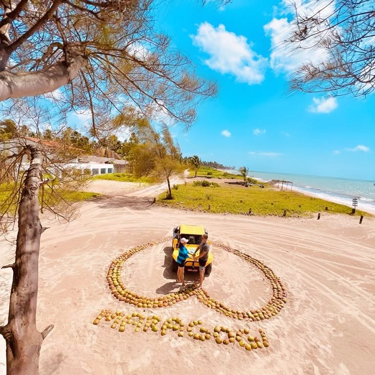
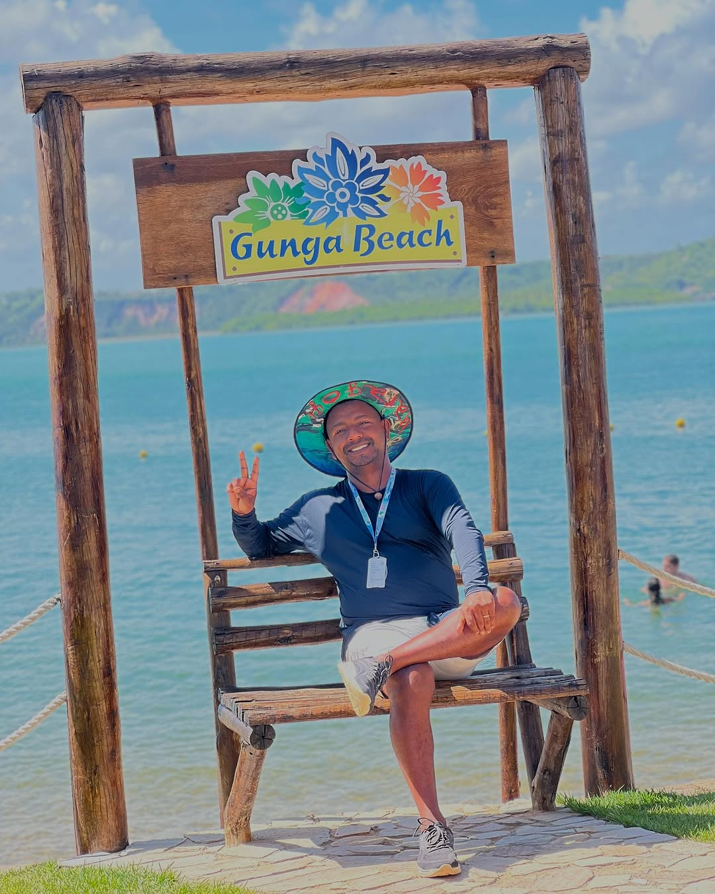
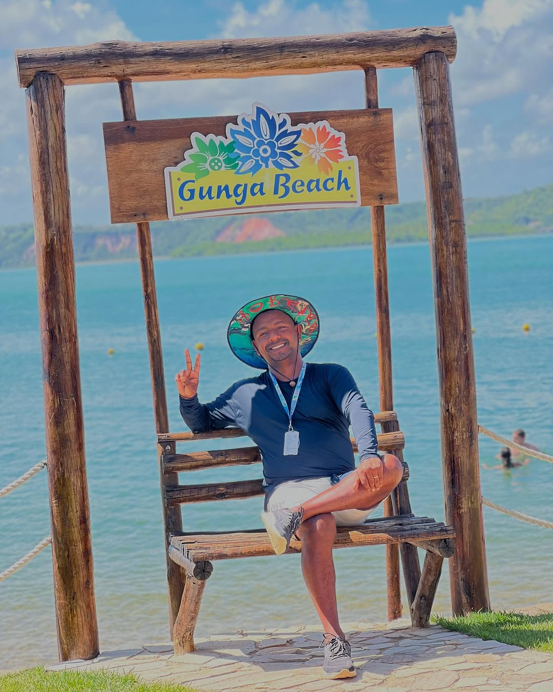

Sobre Mim

Sou um guia de turismo apaixonado por apresentar destinos incríveis e proporcionar experiências inesquecíveis para viajantes.
Guia de Turismo | Experiências Inesquecíveis
Sou um guia de turismo apaixonado por apresentar destinos incríveis e proporcionar experiências inesquecíveis para viajantes.
 

Maragogi - Passeio de lancha nas piscinas naturais
 

Praia do Gunga - Paraíso de águas cristalinas

Barra de Santo Antônio - Passeio de Jeep e quadriciclos

Paripueira - Passeio de Jeep e quadriciclos


Foz do São Francisco - Passeio de Jeep e barco
Email: tsturismo@email.com
WhatsApp: (XX) XXXXX-XXXX
Redes Sociais: @tsturismo | @tsturismo_oficial